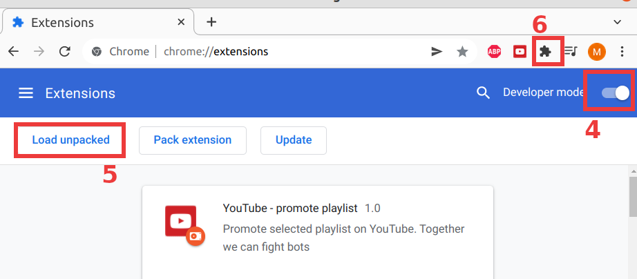

В ситуации когда независимые СМИ закрыты и социальные сети заблокированы в России, YouTube остается одним из немногих платформ где все еще можно делиться информацией.
В этом видео @detoxbrainwash показывает как накручивают просмотры пропагандистским материалам в YouTube. В результате в рекомендациях YouTube преобладают видео в поддержку войны в Украине и других преступлений Путина.
Мы сделали расширение для браузера которое помогает продвигать видео от независимых каналов. Расширение подсвечивает кнопку "Like" и напоминает комментировать видео. Так же есть функция запускать просмотр видео автоматически - в зависимости от настроек можно запустить рекомендуемый плейлист или последние загрузки по отдельным YouTube каналам, или открыть свой плейлист. Если использовать расширение коллективно, мы можем повлиять на рекомендации YouTube.
Поддерживаются браузеры Chrome, Edge, Opera.

Расширение доступно в Chrome Store -
"Support free media on YouTube".
Также можно установить локально:
- Download extension folder from GitHub - use this link
- Unzip the archive in any location on your machine.
- Open Extentions manager in Chrome browser - copy this link to your browser chrome://extensions/
- Enable developer mode in the top right corner - see the screenshot.
- Click "Load unpacked" button in the top left corner to upload extension, select the extension folder.
- Extension is ready to use. To bookmark the extension, click "Extensions" button in the top right corner in the browser, then "Pin" icon next to extension name.
-
It is recommended to use YouTube AdBlock extension to skip ads.

- Download extension folder from GitHub - use this link
- Unzip the archive in any location on your machine.
- Open Extentions manager in Edge browser - copy this link to your browser edge://extensions/
- Enable developer mode in the top right corner - see the screenshot.
- Click "Load unpacked" button in the top left corner to upload extension, select the extension folder.
- Extension is ready to use. To bookmark the extension, click "Extensions" button in the top right corner in the browser, then "Pin" icon next to extension name.
-
It is recommended to use YouTube AdBlock extension to skip ads.

Если используете свой плейлист, мы советуем следовать следующим принципам при выборе видео:
- Продвигать один плейлист командой эффективнее чем каждому участнику создавать отдельный плейлист. Это увеличивает шансы отдельных видео попасть в рекомендации.
- Выбирайте видео среди популярных каналов - DW, Майкл Наки, Радио Свобода, Екатерина Шульман, Михаил Ходорковский, Юлия Латынина, каналы Навального, Илья Яшин, Владимир Милов. Это увеличивает шансы попасть в рекомендации - наши ресурсы ограничены.
- Выбирайте видео с нейтральным названием. Название не должно отталкивать зрителей со смешанными взглядами.
- Выбирайте видео достаточно простые для зрителей незнакомых с ситуацией.
- Избегайте видео жесткого содержания.
- Выбирайте известных/авторитетных спикеров если добавляете интервью.
- Вместо загрузки новых видео, пробуйте попросить известного автора сделать видео на нужную тему.
- Для авторов контента - старайтесь добавлять английские субтитры. Это упростит распространение видео среди международной аудитории.
Discord (ru) https://discord.gg/s7M4QnDtys (en) https://discord.gg/kgBeJQRf
Twitter @Hattifnatt4r
We welcome developers who are willing to support the project